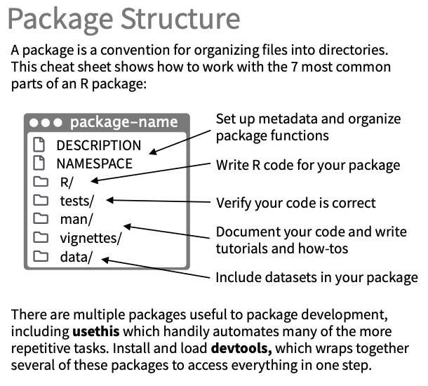

square <- function(x) {
return(x * x)
}Build your first R package
You will learn to
Create a new R package
Writing the first function
Setup quality control
1 Create new R package
1.1 Steps
Go to
Files>New Project…Select
New Directory>R PackageFill in
Package name(optional) Tick
Create a git repositoryClick
Create Project
A typical R package structure

Demo: create new package
1.2 Post creation
Install
usethisGenerate a license for your package:
Open-source:
use_mit_license(copyright_holder=NULL)Proprietary:
use_proprietary_license(copyright_holder)Other license options…
Generate a read me file:
usethis::use_readme_rmd()(optional) Update information inside the
DESCRIPTIONfile.
2 Writing the first function
2.1 Write it
- Create a file to place your function into
- Define a function
Example
2.2 Document it
Install
roxygen2Generate and update the roxygen documentation on top of the function.
Run
roxygen2::roxygenise()to generate documents.
#' Square a number
#'
#' Takes a number x and returns its square, x * x.
#'
#' @param x A numeric value to be squared.
#' @return The square of x.
#' @examples
#' square(2)
#' square(-5.7)
#'
#' @export
square <- function(x) {
return(x * x)
}Demo: how to generate roxygen skeleton
2.3 Caveat (ﾉ◕ヮ◕)ﾉ*:･ﾟ✧
Reuse built-in function names instead of creating new ones
Some reusable function names: plot, print, toString
To reuse function name:
Modify original function to add class to it
Write a custom function for your class
Example: overriding plot function for class square
square <- function(x) {
out <- x * x
class(out) <- "my_class" # tell R that ouptut is of class "my_class"
return(out)
}
# --- Override plot function
plot.my_class <- function(x, ...) {
plot(c(1:length(x)), x, xlab = "x", ylab = "Square of x", ...)
}
# --- Test the new plot function
y <- square(c(1,2,3,4,5,6,7,8,9,10))
plot(y)
3 Set up quality control
3.1 Unit testing
Makes sure your functions work as expected.
Install
devtools,usethisImport usethis:
library(usethis)Create a test:
usethis::use_test("test_name")
Example: unit test for square function
library(testthat)
test_that("square(3) returns 9", {
# --- Define expected output
expected <- 9
class(expected) <- "my_class"
# --- Test function
actual <- square(3)
expect_equal(actual, expected)
})Test passed 🎉
Tip
Run devtools::test() to run all tests in package
3.2 Code coverage
Knowing how much is your package tested.
Install
covrImport
devtoolsandcovrPush your package to GitHub
Run
use_coverage(type = c("codecov"))Run
use_github_action("test-coverage")Login http://codecov.io and get your repo’s token
Run
codecov(token = "YOUR_TOKEN_HERE")

3.3 Automatic R CMD check
Ensure your changes doesn’t cause the package to failed to build.
Re-knit readme:
devtools::build_readme()Run:
use_github_action_check_standard( save_as = "R-CMD-check.yaml", ref = NULL, ignore = TRUE, open = FALSE)

4 Package down
Share your package with the world 🌎.
- Create an empty branch for hosting your page.
# Run this in terminal
# To open Terminal in R studio, click Tools > Terminal > New Terminal
git checkout --orphan gh-pages
git rm -rf .
git commit --allow-empty -m 'Initial gh-pages commit'
git push origin gh-pages
git checkout masterInstall
pkgdownRun
usethis::use_pkgdown()Run
usethis::use_pkgdown_github_pages()
5 Additional materials
5.1 Cheatsheet
5.2 Resources
A sample R package: https://thinhong.github.io/denim/
Popular R packages: https://tidyverse.tidyverse.org/
Thorough guide to R package development: https://r-pkgs.org
“Advanced R” book: https://adv-r.hadley.nz/”
“R for data science” book : https://r4ds.had.co.nz/
Explore syntax for function documentation: https://roxygen2.r-lib.org/articles/roxygen2.html